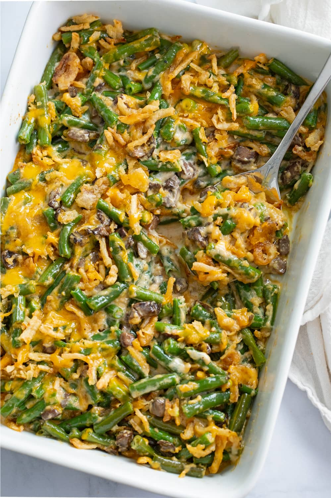

Green Bean Casserole

Description
This is casserole
never had this until i went to a thanksgiving with my white friends. pretty good!
Ingredients
Green Beans
- 1 1/2 lbs. fresh green beans
- 1/2 teaspoon baking soda
- 2 Chicken boillon cubes
Filling/h4>
- 8 oz. mushrooms
- 3 cloves garlic
- 3 tablespoons butter
- 3 tablespoons flor
- 3 cloves garlic, minced
- 1/2 cup chicken broth
- 40 ox. marinara suace
- 1 tablespoon tomato paste
- 1 teaspoon hot sauce
- 1 teaspoon Worcestershire sauce
Steps
Prep work
- Preheat oven to 375° F.
- Begin boiling water in a large soup pot or Dutch oven. Once a boil is reached, add the baking soda and bouillon.
- Meanwhile, combine the chicken broth, half and half, Worcestershire sauce, onion powder, parsley, mustard powder, salt, and pepper in a medium measuring cup with a spout. Set aside.
- Dice the mushrooms and cut the green beans in half or into thirds.
Boil the Green Beans
- Boil the green beans for 5 minutes. Set a timer to avoid overcooking, we don’t want them to be mushy. When they’re done, they’ll have softened but will still hold their shape nicely.
- Drain well and rinse with cold water to stop them from cooking further. Spread out on a clean dish towel to dry.
Make the Filling
- Use the same pot that you used to boil the green beans and melt 1 tbsp. butter over medium heat. Add the mushrooms, garlic, and a pinch of salt and cook for 4-5 minutes, stirring continuously.
- Add the remaining butter along with the flour and cook for 2 more minutes.
- Add the chicken broth mixture in small splashes, stirring continuously. (Adding it slowly ensures that the mixture is thick and that the roux doesn’t break.)
- Finish with 4 more lasagna noodles, the rest of the ricotta mixture, and the rest of the meat sauce.
- Bring it to a boil, then reduce to a simmer. Let it bubble gently for 4 minutes, or until desired consistency is obtained. Stir occasionally as it cooks.
- Remove from heat. It will thicken a little more upon standing.
Assemble and Bake
- Add the green beans and stir to combine. Stir in the Parmesan cheese along with half of the cheddar cheese and half of the crispy fried onions.li>
- Transfer to a lightly greased baking dish. (I used a 9x13-inch, but any size that holds the casserole is fine!) Top with remaining cheddar cheese and fried onions.
- Bake uncovered for 20 minutes, or until the top is brown and bubbly. Serve!